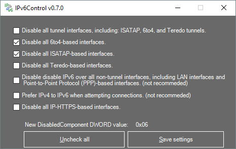

What is it?
IPv6Control is a portable application to allow to enable or disable several IPv6 transition technologies in Microsoft Windows. Normally to disable these IPv6 transition technologies the Windows registry has to be used. But with this application it's easy to disable the IPv6 transition technologies by just using checking several checkboxes.
Screenshot
Because a picture often says more than a lot of words.
This is how this application looks like:

Changelog
2016-07-21 version 0.6.0
First beta release.
Support or Contact
The current release is a BETA release and has not been extensively tested yet.
So if you found a bug please Open a issue.
Authors and Contributors
IPv6Control is created by @D9ping.